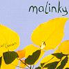

Celtic Lyrics Corner > Artists & Groups > Malinky > Last Leaves > The Bonnie Lass Of Fyvie
|  | The Bonnie Lass Of Fyvie |
| Credits : | Traditional; arranged by Malinky |
|
a) The Bonnie Lass Of Fyvie
b) The Silver Spear |
|
| Appears On : |
Last Leaves
Handsel |
| Language : | Scots-English |
| Other Versions : | a) " The Bonnie Lass O' Fyvie " on Old Blind Dogs' album New Tricks |
Lyrics :
There once was troop of Irish dragoons
Come mairchin' doon through Fyvie O
The captain's fa'en in love wi' a very bonnie quine
Her name that she had was pretty Peggy O
"Ah come runnin' doon the stairs, pretty Peggy, my dear
Come runnin' doon the stairs, pretty Peggy O
Come runnin' doon the stairs an' tie back yer yellow hair
Tak' a last fareweel tae yer daddie O
For it's I'll buy ye ribbons an' I'll buy ye rings
I'll buy ye necklaces o' lammer O
I'll buy ye silken goon for tae clead ye up an' doon
If ye'd just come doon intae ma chamber O"
"Well, I'll hae nane o' yer ribbons, I'll hae nane o' yer rings
An' nane o' yer necklaces o' lammer O
An' as for silken goon, I will never put it on
An' I never will enter yer chamber O"
There's mony a bonnie lass in the howe o' Auchterless
An' mony a bonnie lassie in the gearie O
There's mony a bonnie Jean in the toon o' Aberdeen
But the flo'er o' them a' bides in Fyvie O
Well, the colonel, he cries, "Mount, boys, mount, boys, mount"
And the captain, he cries, "Tarry O
Tarry for a while, just anither day or twa
For tae see if the bonnie lass will marry O"
"I'll drink nae mair o' yer guid claret wine
I'll drink nae mair o' yer glasses O
For the morn is the day that I maun ride away
Wi' adieu tae ye, Fyvie lassies O"
An' it's syne e'er we got tae Old Meldrum toon
Oor captain we had for tae carry O
An' syne e'er we got intae bonnie Aberdeen
Oor captain we had for tae bury O
It's green grow the birks on Bonnie Ythan side
And low lie the Lowlands o' Fyvie O
Oor captain's name was Ned, an' he's died for a maid
He's died for the sodger lass o' Fyvie O
There once was troop of Irish dragoons
Come mairchin' doon through Fyvie O
The captain's fa'en in love wi' a very bonnie quine
Her name that she had was pretty Peggy O